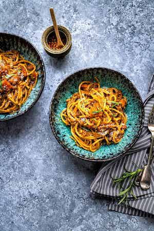

Lentil Bolognese 🍝

Description
For the days when you don't have much time, but want a nice meal. And it is vegan 🌱
Ingredients
- olive oil
- 1 onion
- 2 garlic cloves
- 5.3 ounces of tomato paste
- 3 cups vegetable broth
- 1 cup red lentils
- 1 can of crushed tomatoes
- 12-16 ounces Spaghetti
- fresh basil to taste
Steps
- Chop the onion and garlic cloves.
- Add oil to the pan and simmer the onion until light brown.
- Add garlic, salt and pepper. Stir frequently for a minute.
-
Add the tomato paste and cook for 2-3 minutes. Then add the broth and lentils. Bring to
boil, then reduce heat an simmer for around 20 minutes.
-
Add the can of tomatoes and simmer for another 15 minutes. In the meantime cook the
spaghetti.
-
Taste the bolognese and add salt and pepper to taste. Add fresh basil and the cooked
spaghetti. Enjoy!